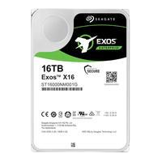

Microfone Gamer HyperX QuadCast S, Antivibração, LED RGB, USB, Compatível com PC, PS4 e Mac - HMIQ1S-XX-RG/G

Descrição do Produto:
A Seagate domina o setor de armazenamento de dados há 40 anos. Nós entendemos os seus desafios ao armazenamento de dados e, por isso, criamos os discos rígidos para desktop BarraCuda Pro de 14 TB e 3,5 polegadas para ajudar você a atingir os seus objetivos. Desenvolvido com base em confiabilidade e inovação comprovadas, o disco rígido BarraCuda está disponível em uma combinação versátil de opções de capacidade e preço, para caber em qualquer orçamento. Todos os discos rígidos da família BarraCuda são equipados com a tecnologia Multi-Tier Caching (MTC). O MTC eleva os níveis de desempenho do seu PC para que você possa carregar aplicativos e arquivos com uma rapidez inédita.